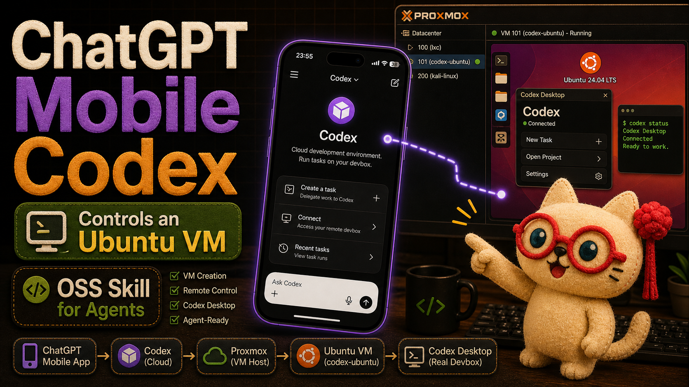
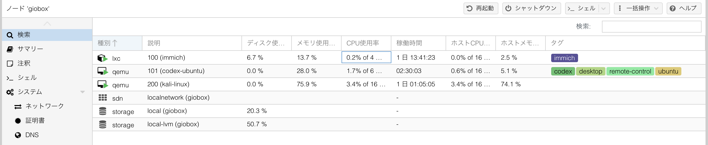
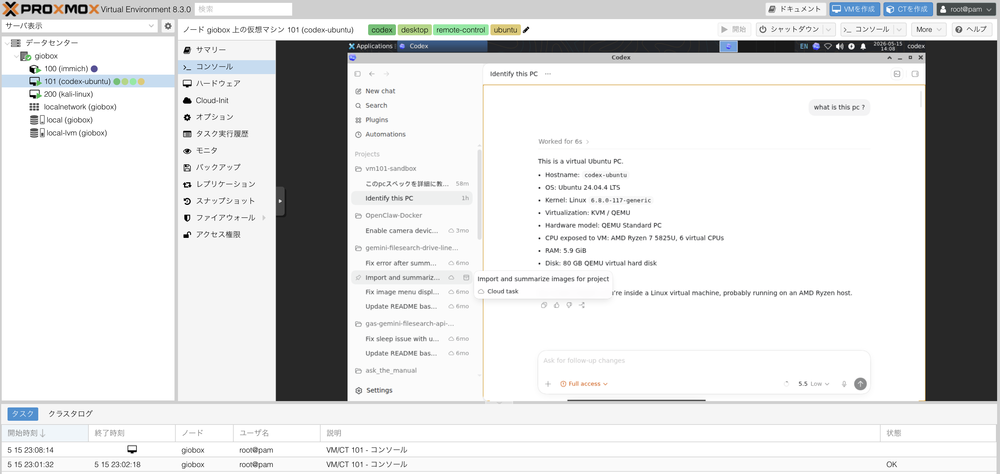
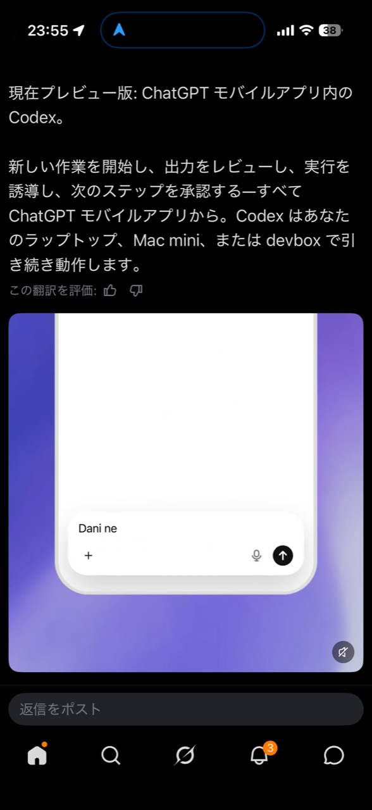
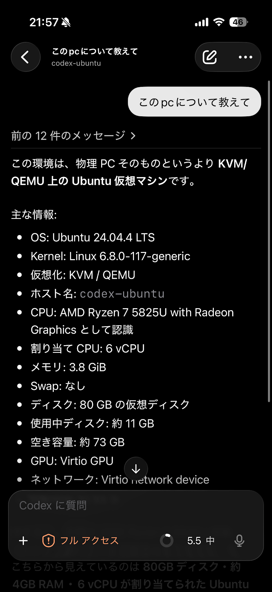
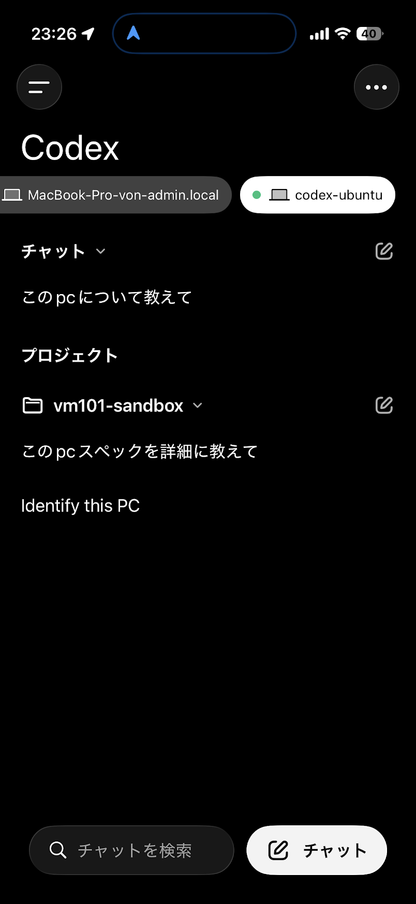

On May 15, 2026, I tried the new Codex experience inside the ChatGPT mobile app and connected it to a real Ubuntu VM running on Proxmox.
That may sound like a small remote-access experiment, but it changes the shape of the workflow.
This is not just "asking AI from a phone." The phone opens ChatGPT Mobile Codex, Codex reaches a desktop Codex session, and that desktop session can operate an actual computer environment. In my case, the target was not my local Mac. It was an Ubuntu VM running inside Proxmox.
I also turned the whole setup into an open source Codex Skill, so another agent can help reproduce the VM setup instead of leaving the process as a one-off lab note.
Repository: https://github.com/Sunwood-ai-labs/codex-mobile-remote-control-vm
Documentation: https://sunwood-ai-labs.github.io/codex-mobile-remote-control-vm/
Release: https://github.com/Sunwood-ai-labs/codex-mobile-remote-control-vm/releases/tag/v0.1.0
What Changed
The important part is the role of the mobile app.
The ChatGPT mobile app is no longer only a place to talk to an assistant. With Codex available from mobile, it can become a control surface for real work environments.
The path I tested looks like this:
- Open Codex inside the ChatGPT mobile app.
- Connect to a Codex Desktop session.
- Run that Codex Desktop session inside an Ubuntu VM.
- Host the Ubuntu VM on Proxmox.
- Use the phone to guide, review, and approve work happening on that VM.
In other words, the phone becomes a remote control for a real devbox.
The Setup
I started with an Ubuntu VM that was basically SSH-only. To make it useful as a Codex Desktop host, I needed a real desktop session.
The setup flow was:
- Create or select an Ubuntu VM in Proxmox.
- Install a lightweight desktop environment with XFCE and LightDM.
- Confirm the Proxmox noVNC console shows a GUI instead of only a TTY login.
- Launch Codex Desktop inside the VM.
- Enable the remote-control related Codex feature flags.
- Sign in with the same account used by the ChatGPT mobile app.
- Verify that the mobile app can open and control the VM-backed Codex session.
The feature block used on the Codex side was:
[features]
remote_connections = true
remote_control = true
workspace_dependencies = falseProof From The VM
Inside Proxmox, the VM is a normal Ubuntu 24.04 desktop machine running Codex Desktop.

The VM is also tagged as codex, desktop, remote-control, and ubuntu, so it is easy to identify later as the mobile-controlled Codex environment.

The Most Important Proof: Mobile Control
The strongest proof is not a local Linux settings panel.
The strongest proof is the phone.
The ChatGPT mobile app was able to open the VM-backed Codex Desktop session and control it.

The actual mobile-control proof is shown below.


The chain looks like this:
- A physical machine runs Proxmox.
- Proxmox runs an Ubuntu VM.
- The Ubuntu VM runs Codex Desktop.
- ChatGPT Mobile Codex connects to that Codex Desktop session.
- The phone can now guide work happening inside the VM.
That is more than remote chat. It is remote control of a real working computer through Codex.
Why This Matters
Phones are not ideal places to run long builds, inspect local files, operate GUI apps, or manage VMs directly.
But a phone is a very good place to guide and approve work.
If the heavy work stays on a VM or devbox, the phone can become the control surface:
- Start work from outside the desk.
- Check a Proxmox lab VM from mobile.
- Let Codex Desktop operate local tools inside the VM.
- Review intermediate results from the phone.
- Approve the next step without sitting in front of the host machine.
The interesting shift is that the mobile app does not need to become the development machine. It can become the remote control for a fleet of development machines.
The Rough Edges
This was not just a package install.
An SSH-only Ubuntu VM first needs a graphical session. Without that, the Proxmox console only shows a TTY login, which is not enough for a desktop app workflow.
The Linux Codex Desktop connection UI can also be misleading. A device row may appear briefly and then disappear, while mobile control still works. For this setup, I treat the phone-side result as the final proof.
If the phone can open and control the VM-backed Codex session, the setup is working.
I Turned It Into An OSS Codex Skill
After the first working setup, I packaged the process as an open source Codex Skill.
The goal is not just to document what I did. The goal is to let an agent help do it again.
The Skill is designed to guide an agent through:
- VM inventory for Proxmox or SSH-accessible Ubuntu hosts.
- Desktop installation or repair for CLI-only VMs.
- Codex Desktop launch and restart paths.
- Remote-control feature configuration.
- Mobile app verification.
- Troubleshooting for logs, enrollment state, and disappearing connection rows.
Install it like this:
mkdir -p "$HOME/.codex/skills"
git clone https://github.com/Sunwood-ai-labs/codex-mobile-remote-control-vm.git \
"$HOME/.codex/skills/codex-mobile-remote-control-vm"Then ask Codex something like:
Set up this Ubuntu VM so Codex Desktop can be remote-controlled from the ChatGPT mobile app.The point is that the agent can help prepare the target environment, while the phone becomes the approval and control surface.
What This Could Enable
If a Proxmox Ubuntu VM can become a mobile-controlled Codex workspace, the pattern can expand.
You could create multiple work nodes:
- A clean Ubuntu validation VM.
- A GPU experiment VM.
- A GUI automation VM.
- A security lab VM.
- A long-running devbox.
Each one can run Codex Desktop. Each one can be reached from ChatGPT Mobile Codex. Each one can become a specialized work environment that is available from wherever the phone is.
This starts to feel less like "using Codex on a PC" and more like "using Codex to operate my workbench from anywhere."
Closing Thought
The big result is simple:
ChatGPT Mobile Codex reached my Proxmox Ubuntu VM and controlled the Codex Desktop session running inside it.
That means the phone is not just a chat device. It can become the remote control for an actual working computer.
And because the setup is now an OSS Codex Skill, the path is not locked inside one experiment. It is reusable, inspectable, and ready for other agents to follow.